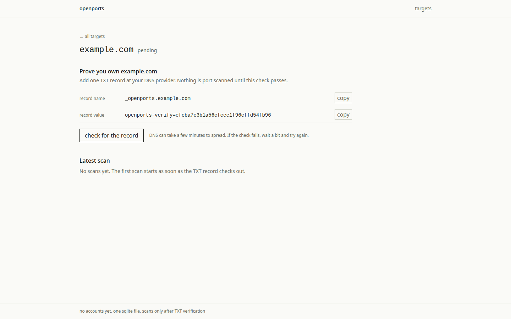
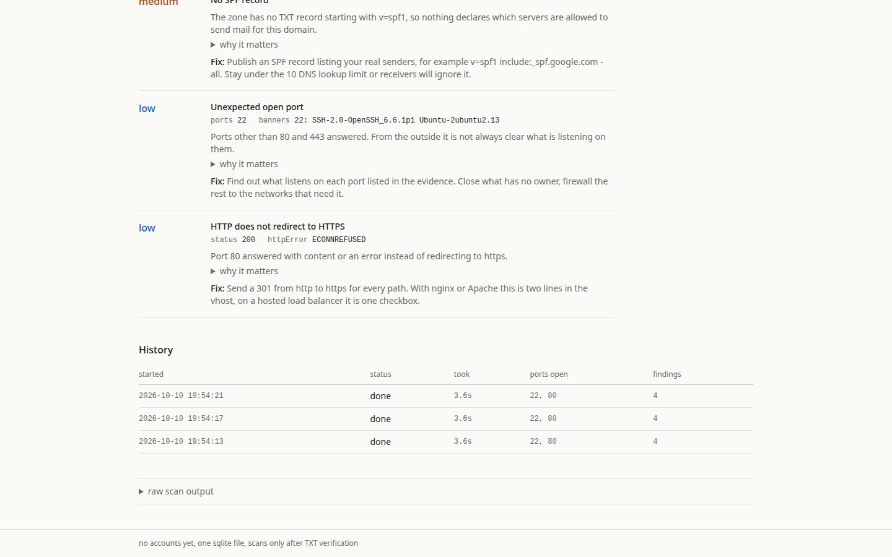

OpenPorts: demo preview
I wanted to build a SaaS for cybersecurity. OpenPorts is an early step: a tool for checking what a domain exposes and tracking changes between scans.
The current version runs as a single instance without accounts or authentication. It checks common TCP ports, TLS certificates, mail-related DNS records and HTTP headers. Findings cover exposure and configuration; this is not a vulnerability assessment.
Run it locally
This page is a static preview. For the application, clone the repository and run:
npm ci npm run dev
Open http://localhost:4310.
Run tests with npm test. See the
README
for requirements and database configuration.
Only scan domains you own or have permission to scan.
Inside the application
Screenshots from the initial release show recorded scan data.




Scope and limits
- Domain verification uses a DNS TXT record. Verification checks are covered by tests.
- Scanning covers common TCP ports, not every port or protocol.
- Results reflect one point in time. Network failures and changing services can affect findings.
- The application uses one SQLite database and one process. Keep it local or restrict access externally.
The design notes explain the storage and change-confirmation choices. See SECURITY.md for reporting security issues.